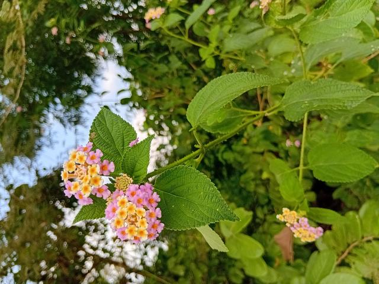
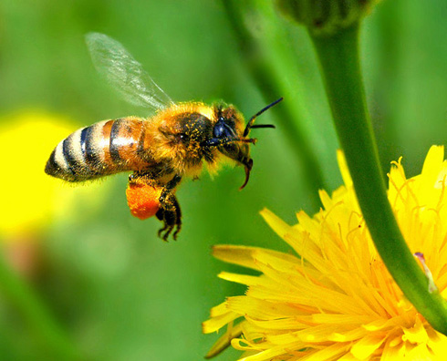
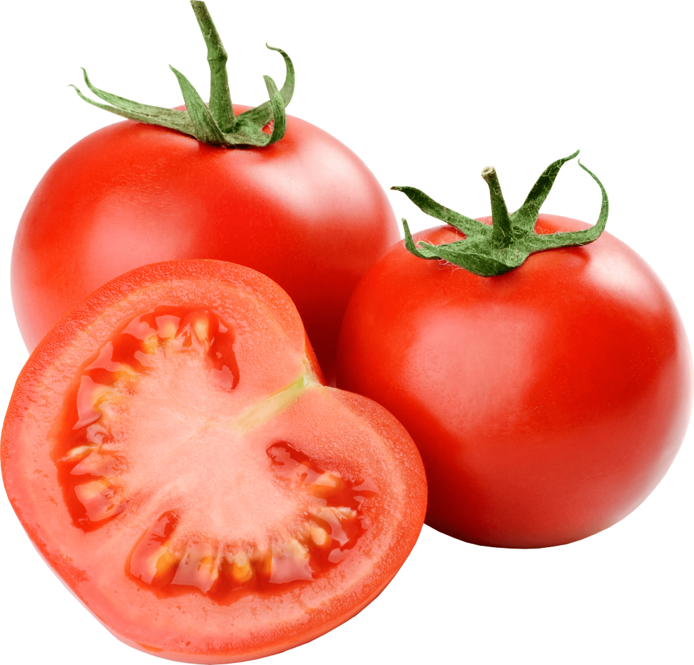
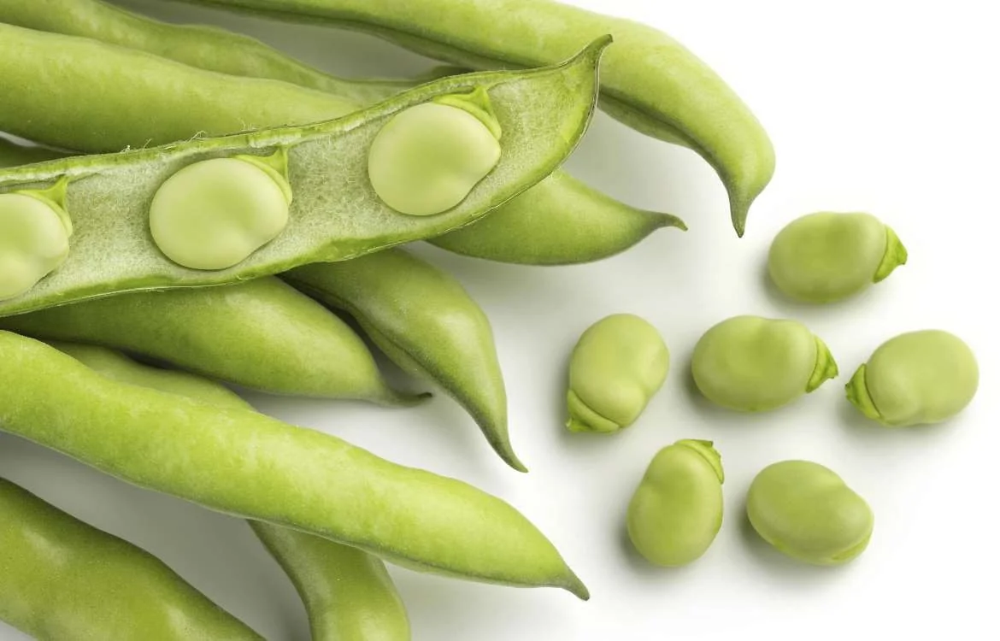

LES DICOTYLEDONES FLEURS COLORES ET INSECTES
Les graminées et les dicotylédones (Angiospermes). Plantes à fleurs les plus évoluées dont la graine est protégée à l'intérieur d'un fruit. Elles se divisent selon la structure de leur graine : Les dicotylédones. Leur graine possède deux cotylédons, regroupant la majorité des arbres feuillus, arbustes et plantes à fleurs classiques.




Appareil végétatif : racine pivotante, feuilles à nervures ramifiées et deux cotylédons dans la graine.
Reproduction : fleur pollinisées surtout par les insectes(coévolution), double fécondation, puis un fruit qui enferme et disperse les graines. Les graines sont dans un fruit : ce sont des angiospermes. Remarque : on parle aujourd’hui plutôt d’eudicotylédones.